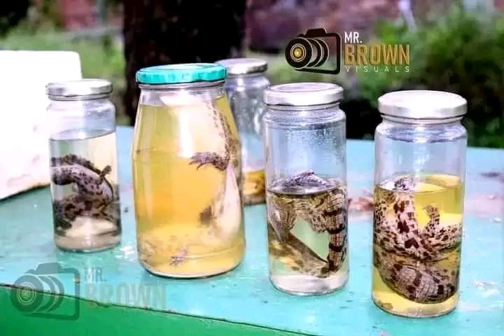
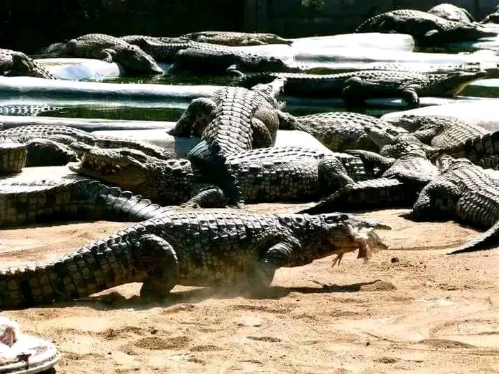
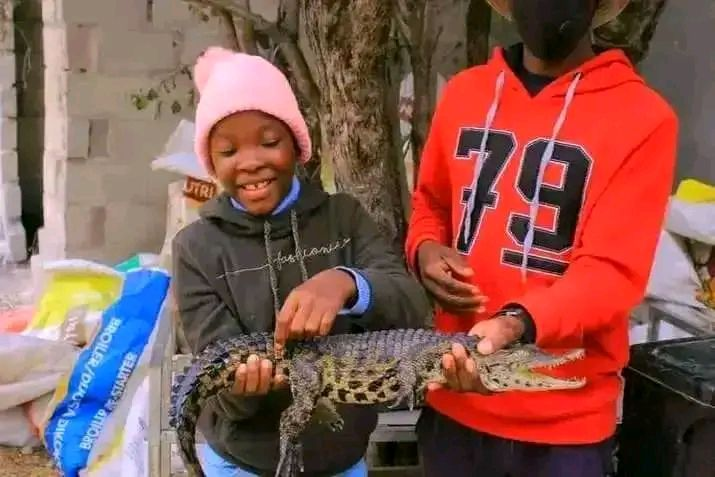
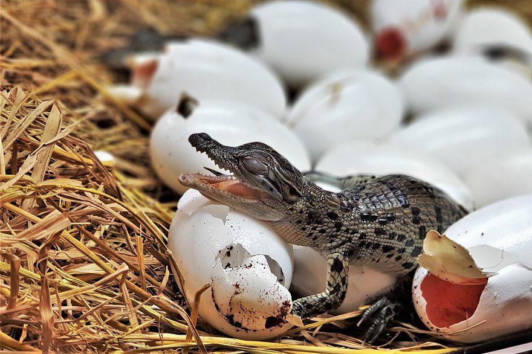

Educational Outings
Specially configured packages for academic centers researching reptilian body structures and behaviors.
Inquire SpaceBook guided tracks, watch feedings, or request group research entries.

Specially configured packages for academic centers researching reptilian body structures and behaviors.
Inquire Space
Experience the staggering speed and jaw pressure of our adult crocodiles from safe, elevated platforms every Sunday.
Reserve Entry
A calm, beautifully guided path perfect for holiday makers wanting to see baby hatch ponds and nesting laboratories.
Buy Tickets